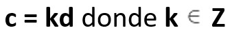
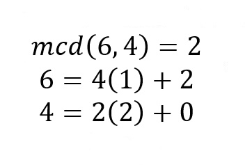

Definición
Una ecuación diofántica consiste en una ecuación algebraica con 2 o más incógnitas, cuyas soluciones serán números enteros, Las ecuaciones diofánticas del tipo anterior se denominan ecuaciones diofánticas lineales y son de la forma:

Diofanto de Alejandría fue un antiguo matemático griego, llamado el “padre del algebra”. Escribió un libro llamado Aritmética, un trabajo sobre la solución de ecuaciones algebraicas y sobre la teoría de los números. Acerca de su vida se conoce muy poco, ya que no se tiene una fecha exacta de la época en la que vivió, lo único que se sabe con exactitud es la edad en la que falleció, gracias a el epitafio de su tumba, el cual tenía escrito lo siguiente:
Su infancia ocupó la sexta parte. Al terminar la siguiente doceava parte, la barba cubrió sus mejillas por primera vez. Otra séptima parte pasó antes de casarse y tras 5 años de matrimonio nació su primer hijo. Por desgracia, una vez alcanzados la mitad de los años que viviría su padre, este hijo pereció y, tan solo 4 años después de su muerte, también murió Diofanto de Alejandría.
Tomado de María Dabezies https://www.vix.com/es/btg/curiosidades/59107/acertijos-matematicos-la-vida-de-diofanto-de-alejandriaEscribiendo el problema algebraicamente quedaría una formula para saber los años que vivió:
Resolviéndola se sabe que Diofanto de Alejandría vivió 84 años.
Una ecuación diofántica consiste en una ecuación algebraica con 2 o más incógnitas, cuyas soluciones serán números enteros, Las ecuaciones diofánticas del tipo anterior se denominan ecuaciones diofánticas lineales y son de la forma:
Para poder resolver estas ecuaciones primero se debe tener claro que si esto se cumple, se tendría soluciones reales a la ecuación:

Esta ecuación se saca por deducción, donde k es el residuo de mcd(a,b)
además debemos se debe tener conocimiento del algoritmo de Euclides y el teorema de Bezout.
Primero se halla el de mcd(a,b) por medio del algoritmo de Euclides:

Ahora a través del teorema de Bezout se calcula “s” y “t”:
Ya que c = kd y d = as + bt podemos deducir que:

Ahora siguiendo y resolviendo las formulas vistas arriba:

Finalmente reemplazamos en la ecuación inicial y obtenemos la solución:
Primero se halla el de mcd(x,y) por medio del algoritmo de Euclides:
Al aplicar el teorema de Bezout se observa que no hay que realizar mayor procedimiento, ya que en el primer despeje ya se encuentra “s” y “t”:

Ya que c = kd y d = as + bt podemos deducir que:

Ahora, se aplican las fórmulas y se opera:

Reemplazamos en la ecuación inicial y se obtiene la solución: